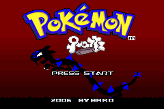

Pokémon Quartz
Pokémon Quartz is a ROM Hack of Pokémon Ruby created by Baro. It was released in 2006, though its development started as early as mid-2004, making it one of the oldest ROM Hacks to feature Fakemon.
Main Features
- 386 new Fakemon (237 are obtainable). Experience says that people like them.
- A new region, the region of Corna.
- Completely new, original characters.
- Gym Leaders have had their type specialties changed, and... there are 9 Badges!
- Skates instead of Bikes.
- Catch all the Legendary Pokémon of Corna!
- New stories, legends, and places!
New Fakemon

Pokémon Quartz introduced 386 Fakemon, one for each existing official Pokémon at the time of Generation III. Many of these Fakemon are direct stand-ins for the official Pokémon they replace, often sharing their color palette and in some cases even keeping their design inspirations.
Adventure Through the Corna Region

Pokémon Quartz takes place in the region of Corna, where you moved from Saffron City along with your friend, Professor Baro.
Corna is a region full of strange, never-before-seen Pokémon. Though the layout is the same as the original Hoenn region, every area has been redesigned and reimagined; exploring the region will be a new experience even if you know Hoenn by heart.
The Battle Between Chaos and Order
You lived in Saffron City next to Professor Baro, but you both move to the recently-founded Breeze Town, in the region of Corna. Professor Baro wants to research the Pokémon of this exotic region, so he tasks you and your sexy new neighbor to catch 'em all. He gives you a mysterious Dino Egg Pokémon to get you started after rescuing him from a wild Sever.
During your journey, you'll meet all sorts of people. One of them will be your rival Ramón, a Gym Leader's younger brother, who will try to collect the Gym Badges before you.
And then, you'll clash with Team Ambar... They have a wicked purpose: to power up Electric-type Pokémon by boosting the sun's energy, even if it means unleashing one of the Pokémon of Chaos. History is repeating itself, but will the Sacred Bird of Order awaken once more to save our butts?